This study now treats the exported artwork as the source of truth and reshapes the interface around the
carved openings, root flow, and medallion band.
Segmented PNG shellMushroom pulse onlyCSS supports, not imitates
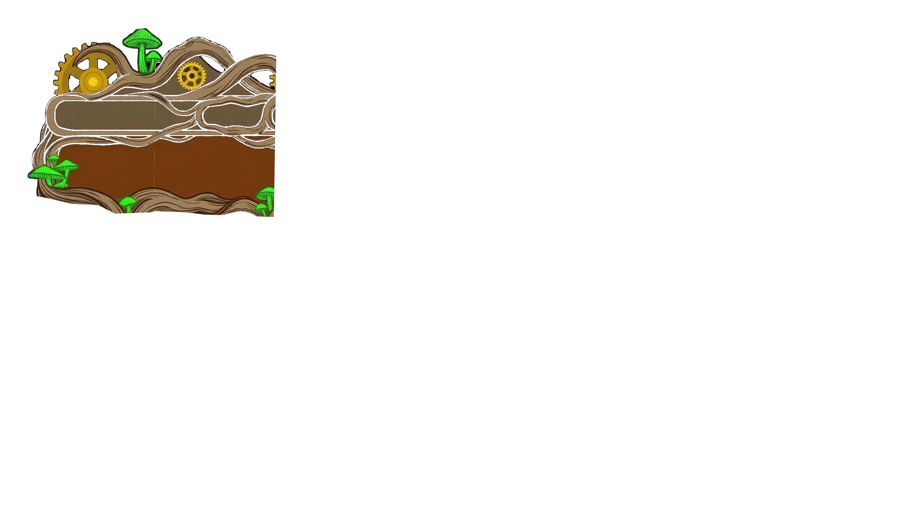
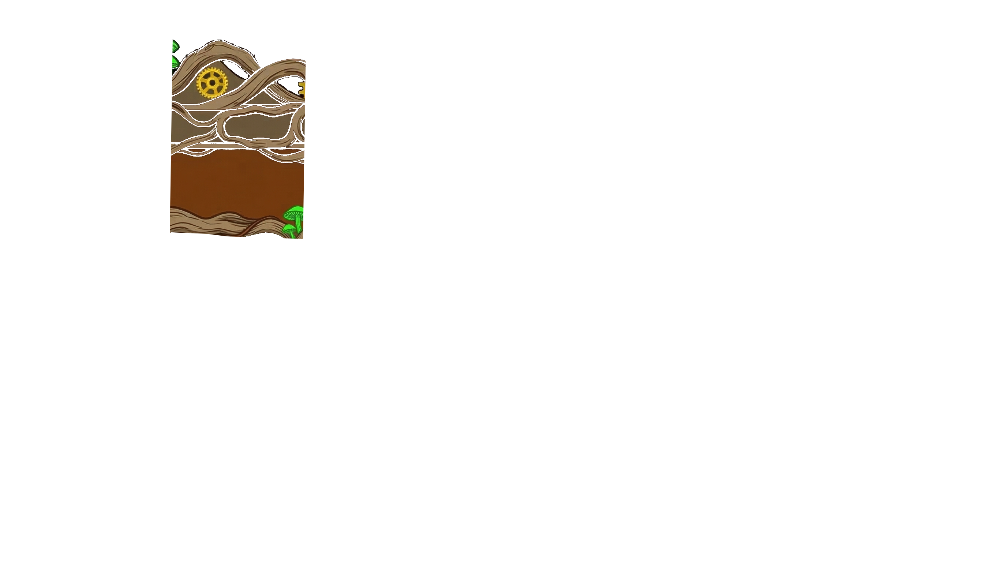
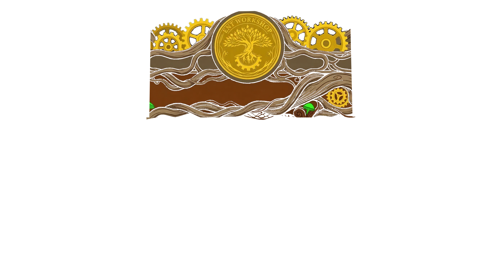
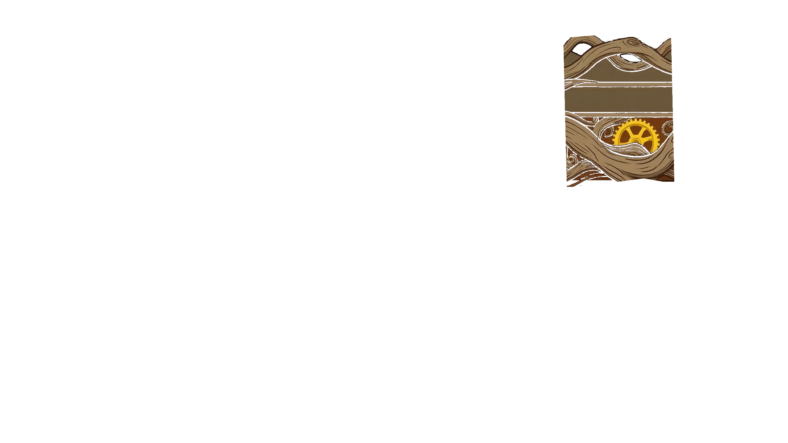
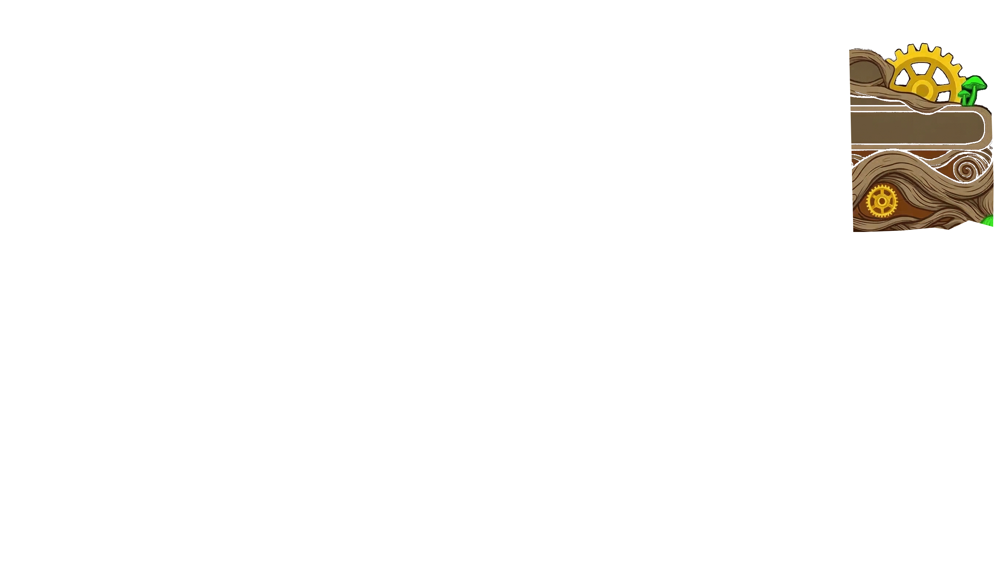
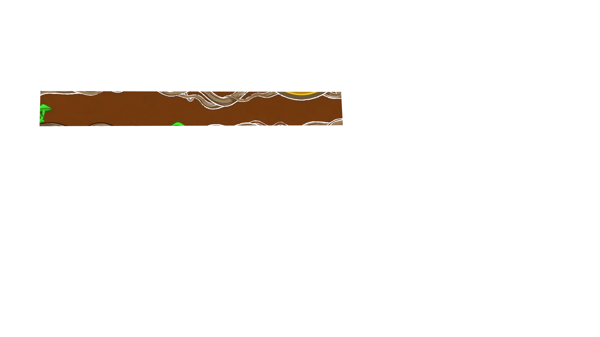
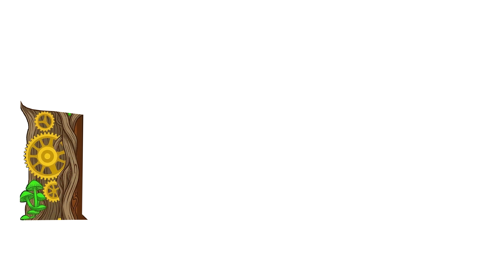
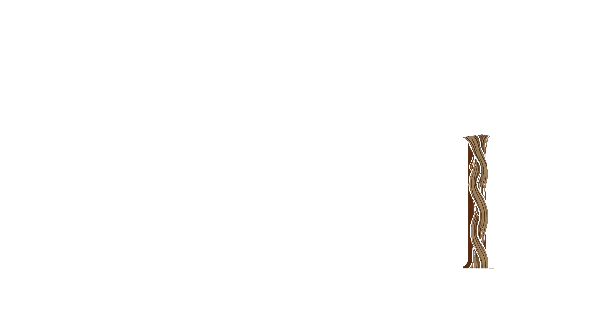
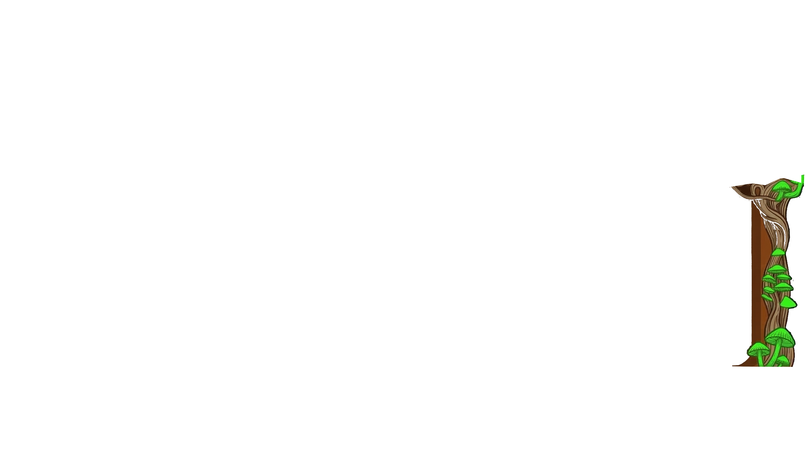
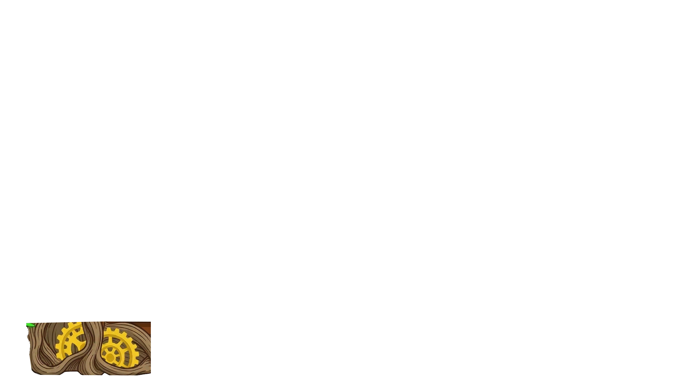
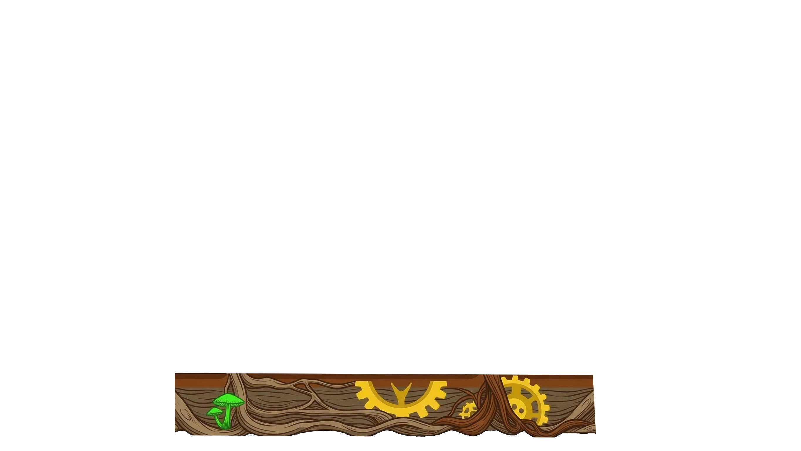
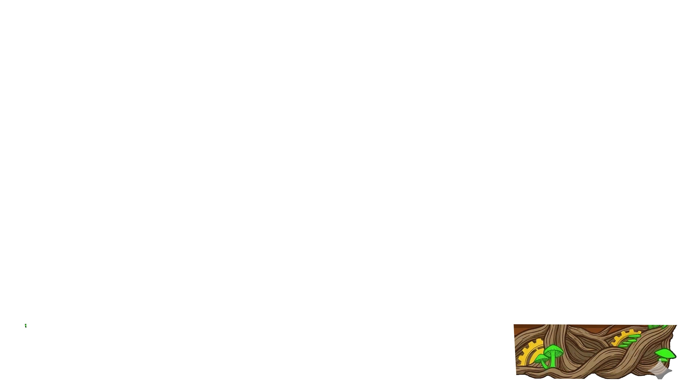
Zenoh ConnectedOrchestrator Online03/10/2026 10:42 AM